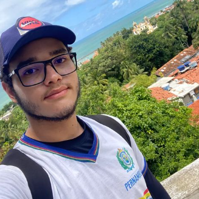
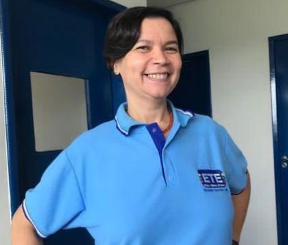
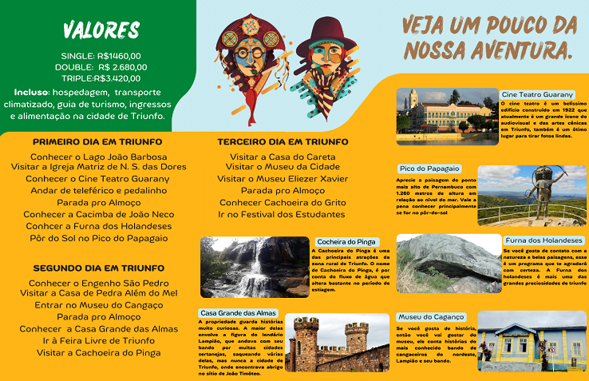

Sobre nós
Somos formandos em Guia de Turismo (GT), na Escola Técnica Estadual Jurandir Bezerra Lins em Pernambuco. No ano de 2022, ano que se encerra o ciclo de ensino médio-técnico. Somos um grupo de 6 pessoas, os quais saberemos um pouco sobre no decorrer dessa página. A nossa cidade escolhida foi Triunfo, pela grande diversidade histórica, cultural e patrimonial.
Integrantes da Equipe
Os integrantes dessa grande equipe são:
Álefe Vinícius Almeida Barbalho de Lira
Brenna Vitória de Lima Nascimento

Gabriel Claudino da Silva
Karine Vitória Mousinho da Silva
Letícia Félix Firmino de Lima
Tarcila Tayná da Silva Nunes
Orientadores

Profa. Symonne de Albuquerque Medeiros
Prof. Sérgio Xavier
História de Triunfo
O nome de Triunfo originou-se de uma luta ocorrida entre os habitantes locais, da Baixa Verde, com os da cidade de Flores, principalmente a família dos Campos Velhos, que não eram favoráveis ao desenvolvimento do povoado da Baixa Verde e chegaram, por diversas vezes, a atacar a feira local, na tentativa de acabá-la.
Sobre Triunfo
A cidade de Triunfo que teve sua fundação em 13 de Junho de 1884 e nesse ano (2022) completa 138 anos, É um município Pernambucano, localizado no topo da Serra da Baixa Verde e é considerada a cidade mais importante do Sertão Pernambucano. Trazendo destaque para sua altitude de 1200 metros e seu clima que pode variar ao longo do ano de 10°C a 31°C. A cidade já foi ponto de parada de Lampião e seus seguidores.
Seus principais atrativos turísticos culturais e históricos são o Pico do Papagaio, Furna dos Holandeses, Museu do Cangaço, Teatro Guarany, Casa Grande das Almas, Cacimba de João Neco.
Saiba mais sobre Triunfo
(Site acessado em 29/10/22, 16:21)
Folder
Folder (frente)
Folder (aberto)
